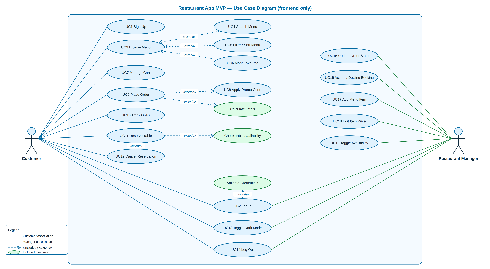
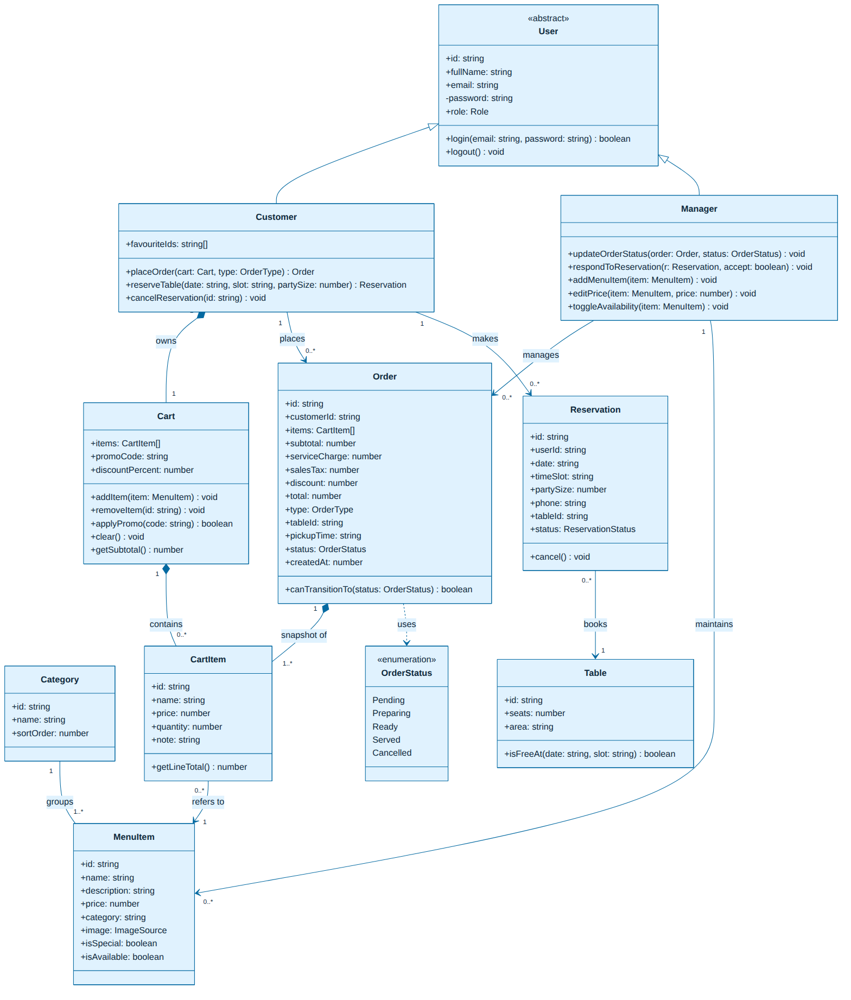
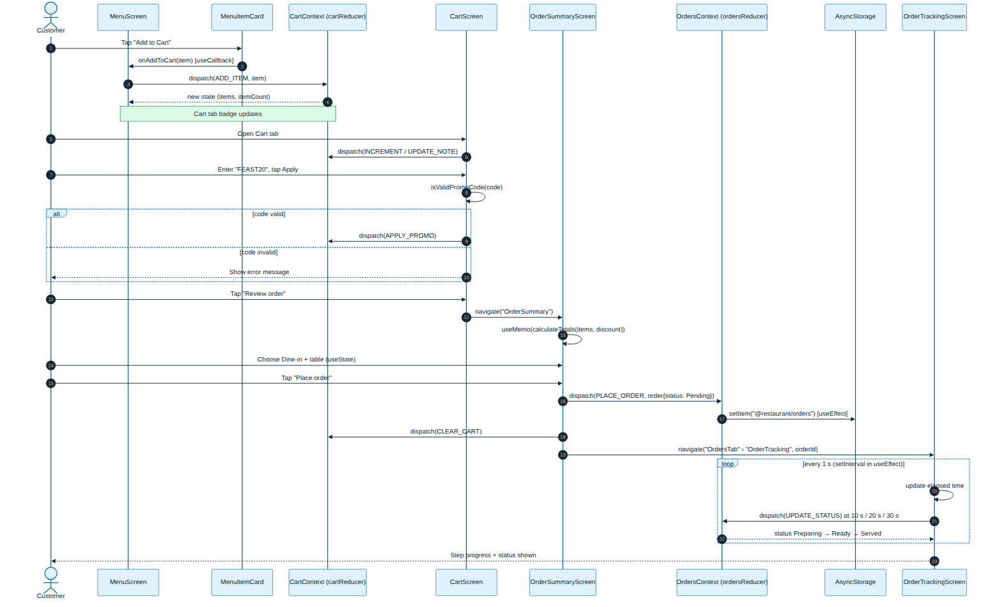
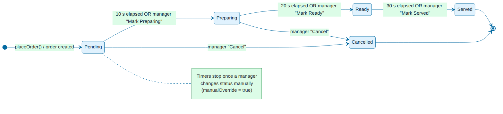
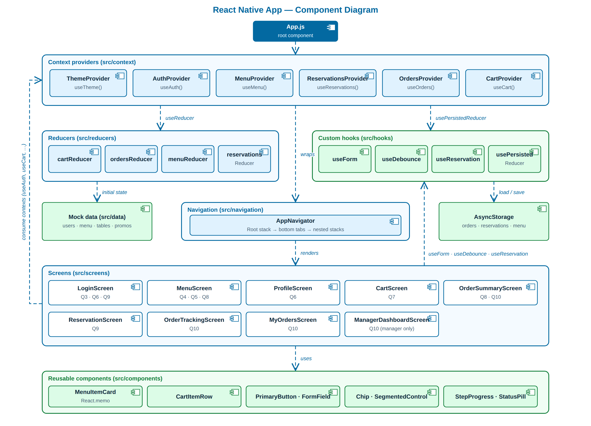

This Software Requirements Specification (SRS) defines the requirements of the Restaurant App MVP, a mobile app, codenamed Saffron Table, that lets diners browse a restaurant's menu, reserve a table and place orders from their phone, and lets a restaurant manager handle incoming orders, reservations and the menu. It covers version 1.0 of the app and the frontend-only prototype built with React Native (Expo SDK 57) for Assignment 1.
Intended audience: the course instructor and teaching assistants who grade the assignment; the developer (the author), who uses it as the build checklist; and any tester who checks the app against the numbered requirements in Section 3.
The MVP is a single React Native app that runs on Android and iOS through Expo Go (and in a web browser for quick demos). All data is mock data kept in JavaScript files and React state and saved on the device with AsyncStorage. There is no server.
src/data/users.js with a simulated 1-second delay, role-based redirect, and Logout.| Term | Definition in this document |
|---|---|
| SRS | Software Requirements Specification: this document, which states what the app must do. |
| MVP | Minimum Viable Product: the smallest version of the app that still delivers the core value (browse, book, order). |
| UML | Unified Modeling Language: the standard diagram notation used in Section 6. |
| Hook | A React function whose name starts with use (e.g. useState) that lets a function component keep state or run side effects. |
| Custom hook | A hook written for this app (e.g. useForm, useReservation) that bundles reusable logic and returns data and functions, never JSX. |
| Context | The React Context API: shares a value (e.g. the logged-in user or the theme) with every screen without passing props through each level. |
| Provider | The component (e.g. AuthProvider) that holds a context's value and wraps the part of the app that can read it. |
| Reducer | A pure function (state, action) → newState used with useReducer, e.g. cartReducer. It never changes the old state. |
| Action / Dispatch | An action is an object such as { type: 'ADD_ITEM', payload }; dispatch sends it to the reducer. |
| Mock Data | Hard-coded sample data in src/data/*.js that stands in for a real database. |
| FlatList | The React Native list component that renders only the rows on screen, used for the menu, cart and order lists. |
| AsyncStorage | Simple key–value storage on the device, used to keep orders, reservations and menu edits between app launches. |
| Debounce | Waiting until the user stops typing for a set time (400 ms) before running the search. |
| Memoisation | Caching a result (useMemo), a function (useCallback) or a component render (React.memo) until its inputs change. |
| Expo / Expo Go | The toolkit used to build and run the React Native app; Expo Go is the phone app that loads it by scanning a QR code. |
| Dine-in / Takeaway | Order types: eat at a chosen table, or collect at a chosen pickup time. |
| Role | Key Permissions & Goals |
|---|---|
| Customer (diner) | Goals: skip queues and phone calls; see today's specials; book a table for a set time; have food ready on arrival. Can: sign up and log in; browse, search, filter and sort the menu; mark favourites; manage the cart and apply promo codes; place Dine-in or Takeaway orders; track own orders; create and cancel own reservations; switch dark mode; log out. Cannot: see the Manager Dashboard, other customers' orders or reservations, or change the menu. |
| Restaurant Manager | Goals: stop taking phone-in orders; digitise the menu; manage reservations efficiently. Can: log in; open the Dashboard tab (visible only to this role); move any order through its lifecycle or cancel it; accept or decline reservations; add menu items, edit prices and switch items on or off; view the menu read-only; switch dark mode; log out. Cannot: place orders or make reservations from the manager account. |
| Guest (not logged in) | Can only see the Login / Signup screen. Every other screen needs a logged-in user. |
I interviewed myself as a busy customer of a mid-range desi restaurant in Islamabad. The answers below became the customer stories marked SI.
| ID | Story | Source |
|---|---|---|
| US-01 | As a customer, I want to book a table for a specific date and time, so that I don't wait in a queue on busy nights. | SI Q1–Q2 |
| US-02 | As a customer, I want to place my order before I arrive (Dine-in with my table), so that my food is ready when I sit down. | SI Q2 |
| US-03 | As a customer, I want to see a “Daily Special” badge on dishes, so that I can pick today's specials quickly. | SI Q3 |
| US-04 | As a customer, I want to search the menu by name, so that I can find a dish like “biryani” without scrolling. | SI Q3 |
| US-05 | As a customer, I want unavailable dishes greyed out with the Add button disabled, so that I never order something that has run out. | SI Q4 |
| US-06 | As a customer, I want to add special instructions such as “no onions” to each item, so that the kitchen gets my request. | SI Q5 |
| US-07 | As a customer, I want to apply a promo code, so that I get the discount I'm entitled to. | SI Q5 |
| US-08 | As a customer, I want to watch my order's status change live, so that I know when it is ready without asking staff. | SI Q6 |
| US-09 | As a customer, I want to see the service charge, tax and discount before I confirm, so that the bill has no surprises. | SI Q7 |
| US-10 | As a customer, I want to switch to dark mode, so that the app is comfortable to use at night. | SI Q7 |
| US-11 | As a customer, I want to save dishes as favourites and sort by price, so that I can decide faster. | SI Q4 |
| US-12 | As a restaurant manager, I want to see incoming orders and move them from Pending to Served, so that I no longer take orders over the phone. | Manager |
| US-13 | As a restaurant manager, I want to accept or decline reservation requests, so that I control table allocation. | Manager |
| US-14 | As a restaurant manager, I want to add dishes and edit prices in the app, so that my digital menu is always current. | Manager |
| US-15 | As a restaurant manager, I want to switch a dish off when it runs out, so that customers can't order it. | Manager |
Each requirement is testable in the running app. IDs are referenced in Section 7.
| ID | Requirement |
|---|---|
| FR-01 | The system shall let the user switch between Login and Signup modes on one screen with a two-option toggle. |
| FR-02 | The system shall require email and password to log in, and additionally full name, confirm password and a role (Customer or Manager) to sign up. |
| FR-03 | The system shall reject submission and show an inline error when the email format is invalid, the password is shorter than 8 characters or has no digit, or the two passwords do not match; each field's error shall clear as soon as that field is edited. |
| FR-04 | The system shall check credentials against the mock users list after a 1-second simulated delay, showing a loading indicator and disabling the submit button meanwhile. |
| FR-05 | The system shall open the Menu for a Customer and the Manager Dashboard for a Manager after successful login, and show an alert with a clear message after a failed login or a duplicate signup email. |
| FR-06 | The system shall log the user out from the Profile screen, clear the cart and reset navigation to the Login screen. |
| ID | Requirement |
|---|---|
| FR-07 | The system shall load the menu through a Promise that resolves after 1.5 seconds, showing a loading indicator meanwhile, and an error message with a Retry button if loading fails. |
| FR-08 | The system shall show horizontal category chips (All, Starters, Mains, Desserts, Drinks) and list only the dishes of the selected category. |
| FR-09 | The system shall show each dish as a card with image, name, description and price, a “Daily Special” badge when isSpecial is true, and a greyed-out card with a disabled Add button when isAvailable is false. |
| FR-10 | The system shall reload the menu when the user pulls the list down (pull to refresh). |
| FR-11 | The system shall show the number of dishes currently listed in the Menu header title. |
| FR-12 | The system shall let the customer mark or unmark a dish as a favourite with a heart icon, and sort the list by Featured, price low to high, price high to low, or name A to Z. |
| ID | Requirement |
|---|---|
| FR-13 | The system shall filter dishes by name or description 400 ms after the user stops typing in the search bar. |
| FR-14 | The system shall focus the search input when the search icon is tapped, and empty it while keeping focus when the clear button is tapped. |
| FR-15 | The system shall keep the last five distinct search terms and show them as tappable suggestions when the search box is focused and empty. |
| FR-16 | The system shall show a friendly empty-state message when no dish matches the search. |
| FR-17 | The system shall show a floating “Back to top” button after the list is scrolled more than 300 px, which scrolls the list back to the first item. |
| ID | Requirement |
|---|---|
| FR-18 | The system shall add a dish to the cart from its menu card, increasing the quantity if it is already in the cart. |
| FR-19 | The system shall let the customer increase or decrease each item's quantity, removing the item when its quantity reaches zero, and remove an item directly with a Remove button. |
| FR-20 | The system shall let the customer type special instructions for each cart item. |
| FR-21 | The system shall apply the promo codes WELCOME10 (10%) and FEAST20 (20%), case-insensitively, and show an error for any other code. |
| FR-22 | The system shall display the total number of items in the cart as a badge on the Cart tab icon, updating immediately. |
| ID | Requirement |
|---|---|
| FR-23 | The system shall offer the next 7 dates and hourly time slots from 12:00 to 22:00 for booking. |
| FR-24 | The system shall disable a time slot when no table with enough seats is free at that date and time, or when the slot is less than one hour away. |
| FR-25 | The system shall validate that the date is not in the past, the party size is between 1 and 12, and the phone number matches 03XX-XXXXXXX. |
| FR-26 | The system shall show a confirmation modal summarising date, time, guests, assigned table, name and phone before saving a reservation with status Pending. |
| FR-27 | The system shall list the customer's reservations with their status, and cancel one only after the customer confirms in an alert. |
| ID | Requirement |
|---|---|
| FR-28 | The system shall calculate subtotal, service charge (5%), sales tax (15%), promo discount and grand total on the Order Summary screen. |
| FR-29 | The system shall require the customer to choose Dine-in with a table or Takeaway with a pickup time before placing an order. |
| FR-30 | The system shall create an order with a unique id, items, total, type, status Pending and a timestamp, empty the cart, and open the Order Tracking screen. |
| FR-31 | The system shall move an order automatically to Preparing after 10 s, Ready after 20 s and Served after 30 s, unless a manager has changed its status by hand. |
| FR-32 | The system shall show a four-step progress indicator and an elapsed-time counter updated every second on the Order Tracking screen. |
| FR-33 | The system shall list the customer's own orders with status and total, each opening its tracking screen. |
| ID | Requirement |
|---|---|
| FR-34 | The system shall show the Dashboard tab only when the logged-in user's role is manager. |
| FR-35 | The system shall list all orders on the Incoming Orders tab with buttons for only the legal next statuses (e.g. Pending → Preparing or Cancel). |
| FR-36 | The system shall let the manager accept or decline each Pending reservation on the Reservations tab. |
| FR-37 | The system shall let the manager add a menu item (name, price, category, optional description), edit an item's price and toggle its availability on the Menu Management tab. |
| FR-38 | The system shall reflect menu changes on the customer Menu immediately and keep orders, reservations and menu edits after the app restarts. |
| Category | ID | Requirement (measurable where possible) |
|---|---|---|
| Usability | NFR-01 | A first-time customer shall be able to go from login to a placed order in under 2 minutes and 10 taps or fewer (excluding typing). |
| NFR-02 | Every tappable control shall have a touch target of at least 44 × 44 pt and an accessibility label; icon-only buttons (heart, search, clear) shall announce their action to screen readers. | |
| NFR-03 | Every error message shall say what went wrong and how to fix it (e.g. “Use the format 03XX-XXXXXXX”). Text shall meet a 4.5:1 contrast ratio in both themes. | |
| Performance | NFR-04 | Tab screens other than the Menu shall render within 300 ms of navigation on a mid-range Android phone; the Menu's only wait is the deliberate 1.5-second simulated load. |
| NFR-05 | Menu, cart and order lists shall use FlatList with a stable keyExtractor and scroll at 60 fps with 50+ items. | |
| NFR-06 | Toggling a favourite shall re-render only the affected MenuItemCard (checked with console.log), using React.memo, useCallback and useMemo. | |
| Responsiveness | NFR-07 | Layouts shall use Flexbox and percentage widths with no fixed screen width, and work from a 360 × 640 dp phone to a 768 dp-wide tablet in portrait, and in a web browser. |
| NFR-08 | Content shall respect safe areas (notches, home indicator); forms shall remain usable when the keyboard is open (KeyboardAvoidingView, scrollable screens). | |
| Maintainability | NFR-09 | Source code shall be organised under src/ in components, screens, context, reducers, hooks, data and navigation (plus theme, utils, constants). |
| NFR-10 | UI pieces used on two or more screens (buttons, inputs, chips, status pills, steppers) shall be shared components; colours shall come only from the theme file; rates, timings and statuses shall be named constants. | |
| NFR-11 | Reducers shall be pure functions covered by Jest unit tests (at least six cart cases); screens shall contain no business logic that belongs in a custom hook. | |
| Data handling without a backend | NFR-12 | All seed data shall live in src/data as JavaScript modules; no network request shall be made for app data. |
| NFR-13 | Orders, reservations and menu edits shall be saved to AsyncStorage whenever they change and restored at startup; a loading screen shall hide the UI until restoring finishes, so empty data never flashes. | |
| NFR-14 | Passwords shall never be stored in global state or AsyncStorage (the mock list only exists in memory); the app shall state clearly that payments are simulated. | |
| Portability | NFR-15 | The app shall run in Expo Go on Android and iOS without native build steps and without any state-management library. |
No database is used. Seed data sits in JavaScript files under src/data. At runtime it is held in React state (useState / useReducer inside context providers), and the data sets marked “persisted” are mirrored to AsyncStorage.
| Data Set Name | Fields | Description |
|---|---|---|
| Users src/data/users.js | id string, fullName string, email string, password string, role 'customer' | 'manager' | Mock accounts for login. Two seed users (one customer, one manager); signups are added to the in-memory list in AuthContext. The logged-in user (without password) is kept in context. |
| Categories src/data/categories.js | id string, name string, sortOrder number | The four menu sections: Starters, Mains, Desserts, Drinks. They drive the category chips; “All” is a UI-only filter. |
| MenuItems src/data/menu.js persisted | id string, name string, description string, price number (Rs), category string, image local asset, isSpecial boolean, isAvailable boolean | 16 dishes. Held in MenuContext via menuReducer; Manager edits (add, price, availability) update this shared state and are saved under @restaurant/menu. |
| Tables src/data/tables.js | id string (T1–T6), seats number (2–12), area string; plus TIME_SLOTS string[] | The floor plan used by useReservation to find the smallest free table for a party, and by the Dine-in table picker. |
| Reservations src/data/reservations.js persisted | id, userId (email), name, phone, date 'YYYY-MM-DD', timeSlot 'HH:00', partySize number, tableId, status Pending | Accepted | Declined | Cancelled, createdAt number | Seed bookings by other guests (tomorrow 20:00 is fully booked, to demonstrate a disabled slot) plus the customer's bookings. Held in ReservationsContext; saved under @restaurant/reservations. |
| Orders created at runtime persisted | id, customerId, customerName, items [{id, name, price, quantity, note}], subtotal, serviceCharge, salesTax, discount, total, promoCode, type Dine-in | Takeaway, tableId, pickupTime, status, manualOverride boolean, createdAt, statusHistory [{status, at}] | Created from the cart on Place Order and managed by ordersReducer in OrdersContext. Status changes must follow the state machine in Figure 4. Saved under @restaurant/orders. |
| Cart runtime state | items [{id, name, price, quantity, note}], promoCode string | null, discountPercent number | The current customer's basket, managed by cartReducer in CartContext. Cleared on order placement and logout. |
| PromoCodes src/data/promoCodes.js | object map: code → percent | WELCOME10 → 10, FEAST20 → 20. |
The diagrams below are also saved as PNG files in A1/UML.

The system boundary contains 19 numbered use cases and 3 included helper use cases. The Customer (left, blue lines) signs up, browses, orders, tracks orders and manages reservations. The Restaurant Manager (right, green lines) updates order status, handles bookings and maintains the menu. Log In, Toggle Dark Mode and Log Out are shared. Place Order «includes» Apply Promo Code (as in the brief; the step is shown on every checkout even when no code is entered) and Calculate Totals. Reserve Table «includes» Check Table Availability, and Log In «includes» Validate Credentials. The optional behaviours Search, Filter/Sort and Mark Favourite «extend» Browse Menu, and Cancel Reservation «extends» Reserve Table.

The abstract User class holds shared attributes and is specialised by Customer and Manager (inheritance). A Customer owns exactly one Cart (composition), which contains zero or more CartItems, each referring to one MenuItem. Each Category groups one or more MenuItems. A Customer places 0..* Orders, and each order keeps a 1..* snapshot of CartItems plus its OrderStatus enumeration. A Customer makes 0..* Reservations, each booking exactly one Table. The Manager manages orders and maintains menu items. Attributes are shown with their JavaScript types, and operations match the reducer actions in the code.

The scenario starts when the customer taps Add to Cart. The memoised MenuItemCard calls the stable onAddToCart handler, which dispatches ADD_ITEM to cartReducer, and the tab badge updates. On the Cart screen the customer adjusts quantities and applies a promo code (the alt fragment shows the valid and invalid branches). The Order Summary computes totals with useMemo. Placing the order dispatches PLACE_ORDER to ordersReducer, an effect saves to AsyncStorage, and the cart is cleared. Navigation then opens Order Tracking, where a setInterval inside useEffect (the loop fragment) updates the timer and moves the status forward.

An order is created in Pending. It moves to Preparing, Ready and Served either automatically (10 s, 20 s and 30 s after placement, demo timings) or when the manager presses the matching button. The manager may Cancel an order only while it is Pending or Preparing. Served and Cancelled are final states. The same transition table (ALLOWED_TRANSITIONS) is enforced by ordersReducer, so an illegal jump (e.g. Served → Pending) is ignored. Once a manager changes a status by hand, manualOverride stops the automatic timers.

App.js wraps the app in six context providers. The Cart, Orders, Menu and Reservations providers own their state through reducers. Orders, Menu and Reservations use the custom hook usePersistedReducer, which loads from and saves to AsyncStorage. Reducers take their initial state from the mock data files. AppNavigator builds a root stack (Login → Main), bottom tabs and one nested stack per tab. Screens read global state through the consumer hooks (useAuth, useCart…), use the custom hooks useForm, useDebounce and useReservation, and are built from shared components such as the memoised MenuItemCard.
Each subsection gives the screen's purpose, UI elements, navigation entry and exit points, local data used, and the hooks used with the reason. Sections 7.1–7.8 correspond to Questions 3–10.
LoginScreen.js)| Purpose | Authenticate an existing user or create a new account, then send the user to the right home screen for their role. FR-01 – FR-05. |
| UI elements | Brand heading; Log in / Sign up segmented toggle; Full name (signup); Email; Password with Show/Hide button; Confirm password and Customer/Manager role selector (signup); inline red error texts; submit button with ActivityIndicator; demo-account quick-fill buttons. |
| Navigation | Entry: app start (initial route) and after Logout (stack reset). Exit: on success, resetRoot('Main') opens the MenuTab for customers or the DashboardTab for managers, removing Login from history. On failure the user stays on the screen and sees an alert. |
| Local data | users from src/data/users.js (via AuthContext, which also stores new signups). |
| Hooks & why | useState for mode, showPassword and isSubmitting: independent UI flags. useForm (custom, Q9) for values, errors, handleChange and handleSubmit; it clears a field's error on edit. useCallback for a mode-aware validate. useRef + useEffect to hold the 1-second setTimeout id and clear it on unmount. useAuth (context) for users, login and registerUser. |
MenuScreen.js)| Purpose | Show the restaurant's dishes by category so customers can choose and add them to the cart. FR-07 – FR-12. |
| UI elements | Loading spinner; error state with Retry; category chips; sort button; FlatList of MenuItemCards (image, Daily Special badge, name, description, price, “n in cart”, heart, Add to Cart / Unavailable); pull to refresh; header title “Menu (n)”. |
| Navigation | Entry: after customer login (default tab) or the Menu tab (both roles; read-only for managers). Exit: any bottom tab. Adding to the cart does not navigate, but updates the Cart tab badge. |
| Local data | menu.js through MenuContext (so Manager edits appear instantly); categories.js; the cart from CartContext for quantities. |
| Hooks & why | useState for menuItems, isLoading, error, refreshing and selectedCategory. useEffect with [] starts the 1.5 s load once and returns a cleanup that clears the timer. A second useEffect syncs Manager edits, and a third sets the header title from the item count. In Q4, filtering was a useEffect on [selectedCategory, menuItems]. In Q8 it became one useMemo (category + search + sort), because derived data should not be stored in state. useCallback keeps handleAddToCart and handleToggleFavorite stable so React.memo can skip unchanged cards. |
MenuScreen.js)| Purpose | Find dishes quickly and move around a long list. FR-13 – FR-17. |
| UI elements | Search bar with a search icon (focuses input) and a clear button; recent-search chips; empty-state card; floating “Back to top” button; small “Renders: n” debug label. |
| Navigation | Lives inside the Menu screen, so it has the same entry and exit points. No navigation of its own. |
| Local data | The loaded menuItems; recentSearches (last 5 terms, in state). |
| Hooks & why | useRef for the TextInput (focus), the FlatList (scrollToOffset), the render counter and the previous query. Refs persist across renders without causing re-renders. In Q5 a useRef also held the debounce timeout id. In Q9 this was replaced by the useDebounce(value, 400) custom hook. useState for showBackToTop (set when the offset passes 300 px), isSearchFocused and recentSearches. |
ProfileScreen.js, src/context)| Purpose | Show who is logged in, switch light/dark mode for the whole app, and log out. FR-06, FR-34. |
| UI elements | Avatar with initials; name; email; role pill; Dark mode Switch; Log out button with confirmation. |
| Navigation | Entry: Profile tab (both roles). Exit: Log out resets the root stack to Login; the other tabs remain available. |
| Local data | The logged-in user from AuthContext; isDark and the palettes from ThemeContext / src/theme/colors.js (sky blue, white and light green). |
| Hooks & why | useContext through the custom consumer hooks useAuth and useTheme, which throw a descriptive error outside their provider. Context avoids passing user and colors through every navigator and screen. useCart clears the cart on logout. Inside the providers, useState, useCallback and useMemo keep the context value stable. |
CartScreen.js, cartReducer.js, CartContext.js)| Purpose | Review and adjust the basket before checkout. FR-18 – FR-22. |
| UI elements | FlatList of CartItemRows (name, unit price, line total, − / + stepper, Remove, special-instructions input); promo code input with Apply, applied-code banner with Remove, error text; subtotal; Review order button; Clear cart; empty state with “Browse the menu”. |
| Navigation | Entry: Cart tab (customer only; badge shows the item count). Exit: “Review order” pushes OrderSummary in the Cart stack; “Browse the menu” switches to the Menu tab. |
| Local data | Cart state { items, promoCode, discountPercent }; promoCodes.js. |
| Hooks & why | useReducer (inside CartProvider) with cartReducer, because the actions (ADD_ITEM, REMOVE_ITEM, INCREMENT, DECREMENT, UPDATE_NOTE, CLEAR_CART, APPLY_PROMO, REMOVE_PROMO) all change related fields and are easier to test as a pure function. useCart exposes state, dispatch and itemCount (a useMemo). useState holds the promo input text and its error; useCallback keeps the row handlers stable. |
OrderSummaryScreen.js, MenuItemCard.js)| Purpose | Show a clear bill and confirm how the customer wants the order, then place it. FR-28 – FR-30. |
| UI elements | Item lines with notes; Subtotal, Service charge (5%), Sales tax (15%), Promo discount and Grand total; Dine-in / Takeaway toggle; table chips (T1–T6 with seats) or pickup-time chips; “Place order · Rs …” button; “Demo only: no real payment” note. |
| Navigation | Entry: “Review order” on the Cart screen. Exit: Back returns to Cart. Place order navigates to OrdersTab › OrderTracking for the new order and pops the Cart stack to its top. |
| Local data | Cart from CartContext; mockTables; rate constants in src/constants/pricing.js. |
| Hooks & why | useMemo computes the totals, depending only on cart.items and cart.discountPercent. useState for orderType, tableId and pickupTime. useOrders dispatches PLACE_ORDER; useCart dispatches CLEAR_CART. On the Menu, MenuItemCard is wrapped in React.memo and receives useCallback handlers, so tapping one heart re-renders one card. |
ReservationScreen.js, useReservation.js)| Purpose | Let a customer request a table for a date, time and party size, and manage their bookings. FR-23 – FR-27. |
| UI elements | Date chips (next 7 days); party-size stepper (1–12); 11 time-slot chips (disabled ones are struck through); “Table T… is free” note; Name and Mobile inputs; error texts; Review booking button; confirmation Modal (bottom sheet) with Edit / Confirm booking; My Reservations cards with status pill and Cancel booking. |
| Navigation | Entry: Reserve tab (customer only). Exit: any tab. The modal opens and closes on the same screen. |
| Local data | mockTables, TIME_SLOTS, and reservations from ReservationsContext (seeded with mockReservations). |
| Hooks & why | The custom hook useReservation holds all business logic: date, slot, party size, contact, findFreeTable, slot availability (useMemo), validation, createReservation and cancelReservation. It returns data and functions only, never JSX. The screen keeps only UI state (useState for modal visibility and the success message). Hook rules followed: names start with use, hooks are called at the top level, and no hook returns JSX. |
OrderTrackingScreen.js, MyOrdersScreen.js, ManagerDashboardScreen.js)| Purpose | Customers follow their order live. The manager runs the restaurant: orders, bookings and menu. FR-31 – FR-38. |
| UI elements | Tracking: order id, status pill, large status text with hint, four-step progress indicator, “Time since order” mm:ss counter, item list and total. My Orders: order cards. Dashboard: segmented tabs Orders (n) / Bookings (n) / Menu. Order cards with “Mark Preparing / Ready / Served” and Cancel buttons; booking cards with Accept / Decline; an Add-item form (name, price, description, category chips) and menu rows with “Edit price” and an availability Switch. |
| Navigation | Tracking entry: after Place order, or by tapping an order in My Orders; back returns to My Orders. Dashboard entry: the manager's default tab after login (tab rendered only when user.role === 'manager'). |
| Local data | Orders (OrdersContext), reservations (ReservationsContext) and menu (MenuContext), each persisted in AsyncStorage via usePersistedReducer. |
| Hooks & why | useEffect + setInterval: one interval updates the elapsed seconds every 1 s. Another advances the status one legal step at 10, 20 and 30 s, and stops when manualOverride is set or the order is finished. Both return clearInterval cleanups. useReducer (ordersReducer, reservationsReducer, menuReducer) for shared state; usePersistedReducer uses useEffect to load on mount and save on change, and exposes isHydrated for the startup loading screen. useForm for the Add-item form, useMemo for counts and sorted lists, and useState for the active dashboard tab and inline price editing. |
| Screen / module | useState | useEffect | useRef | useContext | useReducer | useMemo | useCallback | Custom hooks |
|---|---|---|---|---|---|---|---|---|
| LoginScreen | ✓ | ✓ | ✓ | ✓ | ✓ | useForm | ||
| MenuScreen | ✓ | ✓ | ✓ | ✓ | ✓ | ✓ | useDebounce | |
| ProfileScreen | ✓ | useAuth, useTheme | ||||||
| CartScreen | ✓ | ✓ | ✓ (provider) | ✓ | useCart | |||
| OrderSummaryScreen | ✓ | ✓ | ✓ | useCart, useOrders | ||||
| ReservationScreen | ✓ | ✓ | ✓ (provider) | ✓ (in hook) | ✓ (in hook) | useReservation | ||
| OrderTrackingScreen | ✓ | ✓ | ✓ | ✓ (provider) | useOrders | |||
| MyOrdersScreen | ✓ | ✓ | useOrders, useAuth | |||||
| ManagerDashboardScreen | ✓ | ✓ | ✓ (providers) | ✓ | ✓ | useForm | ||
| MenuItemCard | React.memo + useContext (theme). Receives stable useCallback handlers. | |||||||
| Context providers | ✓ | ✓ | ✓ | ✓ | ✓ | usePersistedReducer | ||
End of document.